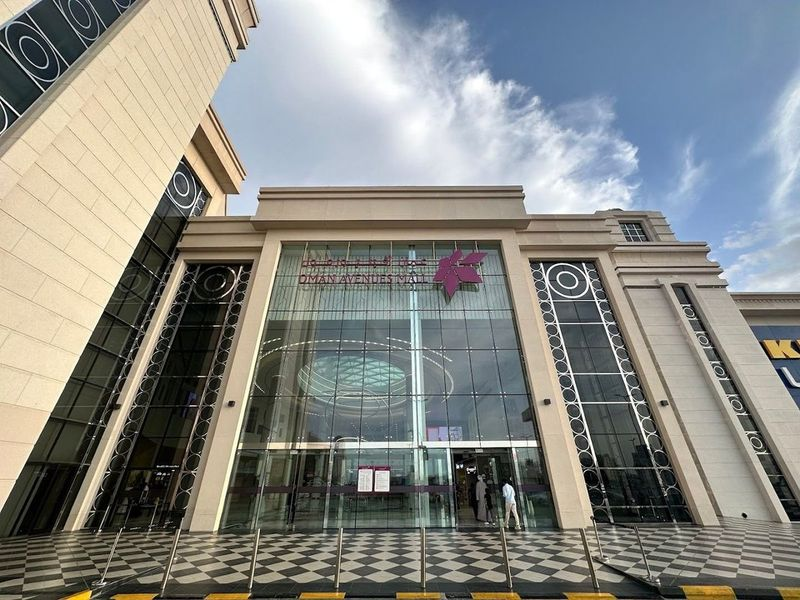
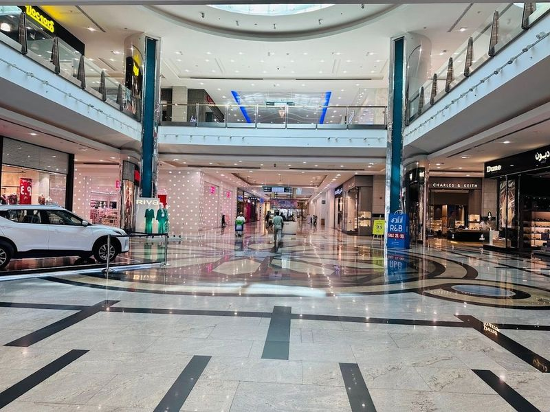
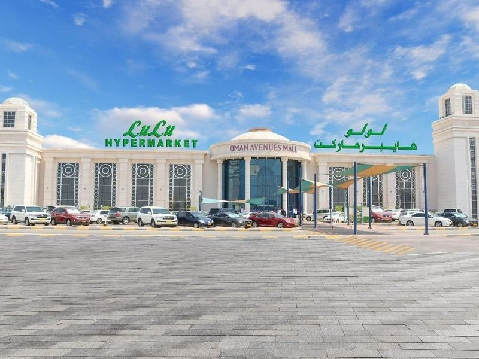
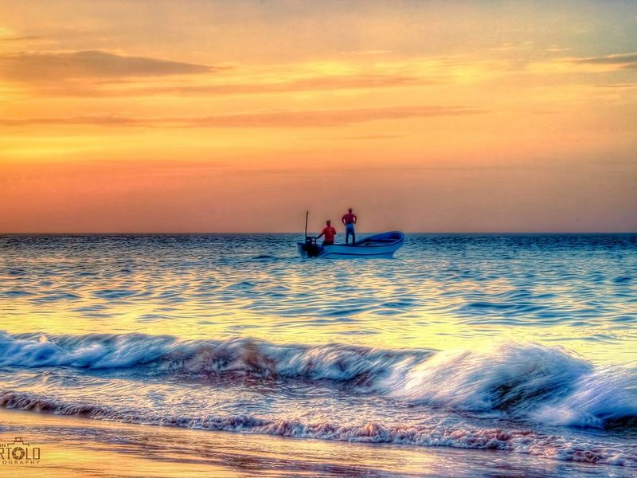
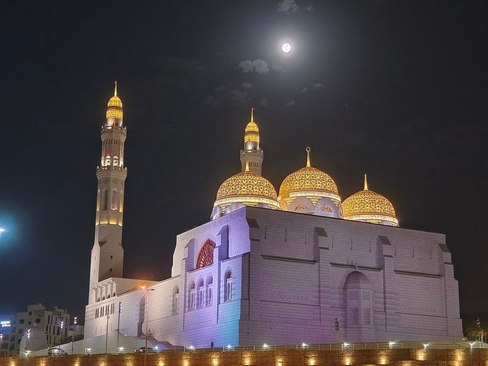
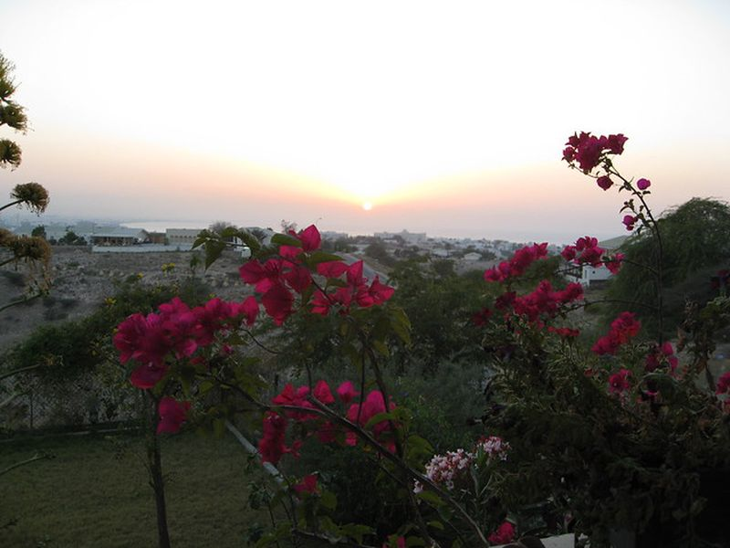
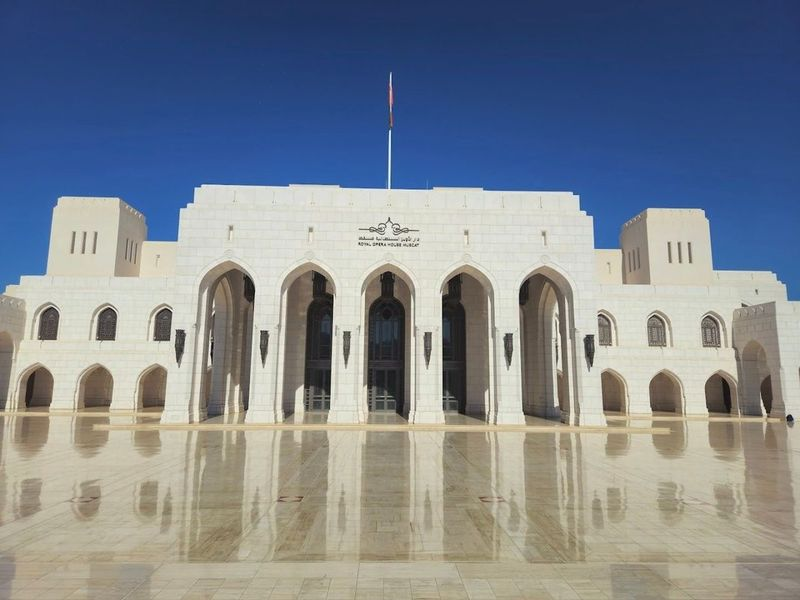
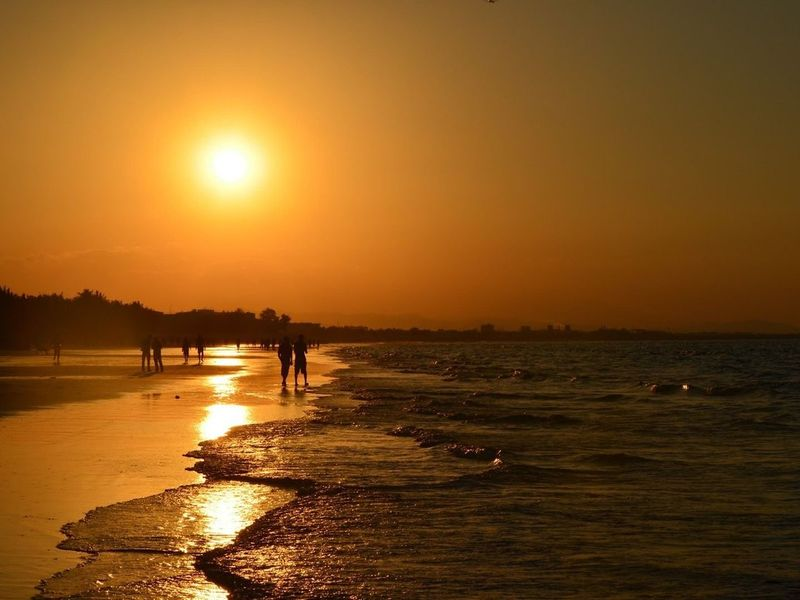
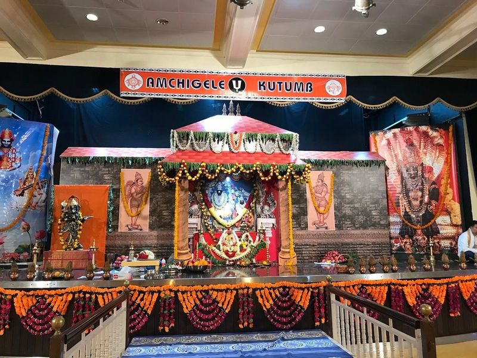
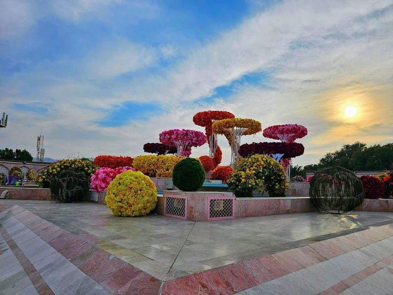

Explore Muscat
A Brief History
Muscat's harbours linked Arabian Sea trade to interior Oman from the sixteenth century under Portuguese pressure and later Al Said dynastic rule. Forts, mosques, and corniche palaces record how maritime commerce and Ibadi Islamic governance shaped the Gulf sultanate's capital. Mutrah souq corniches and royal opera precincts extend harbour forts along the Gulf of Oman shoreline.
Attractions Map
Top Sights & Activities

Oman Avenues Mall
Oman Avenues Mall is the largest shopping center in the Sultanate of Oman, located in the Al Ghubrah area of Muscat. Spanning over 72,000 square meters, it boasts a luxurious and contemporary design and houses more than 300 stores, including renowned global brands like 'Nike,' 'Adidas,' and 'Victoria's Secret.' Visitors can indulge in upscale dining experiences at various restaurants offering international cuisines.

Muscat Grand Mall
Muscat Grand Mall is a renowned shopping complex in Muscat, offering a wide range of brand-name retailers, dining options, a movie theater, and a kids' play area. It is recognized as malls in the city and provides an excellent shopping experience for visitors. The mall features numerous clothing and shoe stores from brands like Aldo, Polo, and Desigual. Additionally, there is a supermarket where visitors can purchase daily necessities.

LuLu Hypermarket - Bousher
LuLu Hypermarket - Bousher is a popular shopping destination in Muscat, offering a diverse selection of products and catering to a wide range of needs. It provides an everything-under-one-roof shopping experience, with offerings ranging from pet food and electronics to fresh bakery items and international brands that are hard to find elsewhere. The hypermarket is frequented by expat families and Omani nationals who appreciate its convenience, variety, and excellent customer service.

Ghubrah Beach Park
Ghubrah Beach Park is listed among principal sites for Muscat within Oman. Municipal and regional heritage listings document its place in the historic centre and travellers routes through Muscat. Ghubrah Beach Park is listed among principal sites for Muscat within Oman.

Mohammed Al Ameen Mosque
Perched on a hill in Muscat, the Mohammed Al Ameen Mosque is a striking sight with its gleaming white marble exterior. Completed in 2014, the mosque's golden dome and blue illumination make it easily visible from highways at night. Unlike popular tourist spots, this mosque offers a quieter visit for those seeking to explore local religious sites. Open to the public every morning except Fridays, visitors are required to dress modestly.

Muscat View
Muscat View is listed among principal sites for Muscat within Oman. Municipal and regional heritage listings document its place in the historic centre and travellers routes through Muscat. Muscat View is listed among principal sites for Muscat within Oman.

Royal Opera House Muscat
The Royal Opera House Muscat, constructed in 2011, is a Islamic-Italianate-style complex that includes a concert theater and beautiful gardens. It hosts a variety of performances such as ballet, opera, and classical concerts by touring companies from around the globe. The architectural design resembles grand Omani palaces and features smooth limestone finishing with an imposing arched entryway leading into its grand hall adorned with gilded wooden ceilings and carved balconies.

Qurum Beach
Qurum Beach, located in Muscat, Oman, is a popular destination for beach enthusiasts. The long sandy stretch is adorned with palm trees and offers amenities such as showers, restrooms, and refreshment vendors. Visitors can enjoy leisurely walks or jogs along the flat pathways lined with cafes while taking in the serene coastal views. Additionally, the beach provides opportunities for water sports like kite surfing and beach games such as volleyball amidst natural beauty.

Sri Krishna Temple, Muscat, Oman
The Sri Krishna Temple in Muscat, Oman is a beautiful and peaceful Hindu temple. The temple complex has a Ganesh temple and Mataji temple, which can hold 500-700 worshipers for celebrations during festive days. The hall within the temple premises has a capacity to hold more people, making it perfect for large celebrations. There is ample parking available behind the temple.

Qurum Natural Park
Qurum Natural Park, also known as Qurum Nature Reserve, is a popular spot in Muscat for both residents and tourists. It is often referred to as the "lungs of Muscat" due to its lush greenery and natural beauty. The park features a boating lake, the Sultan Qaboos Rose Garden, fountains, an artificial waterfall, and a small amusement park for kids.